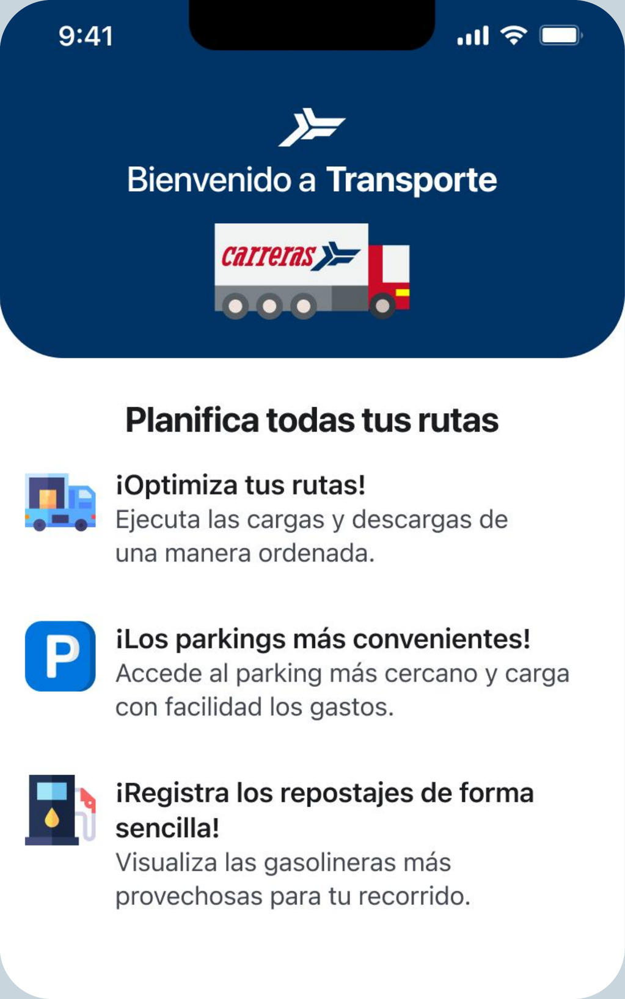
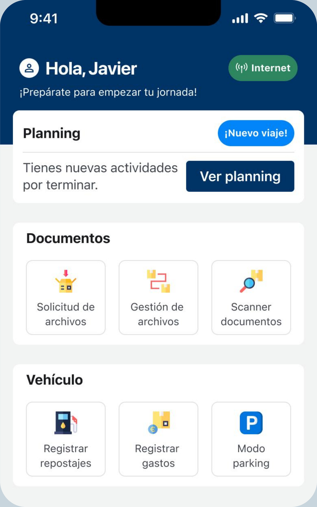
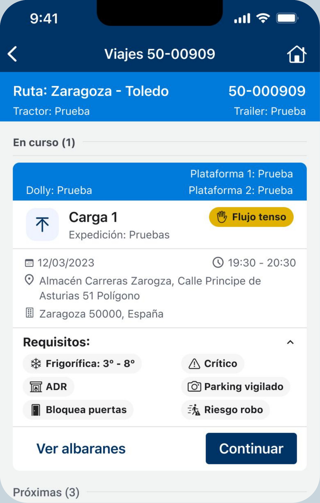
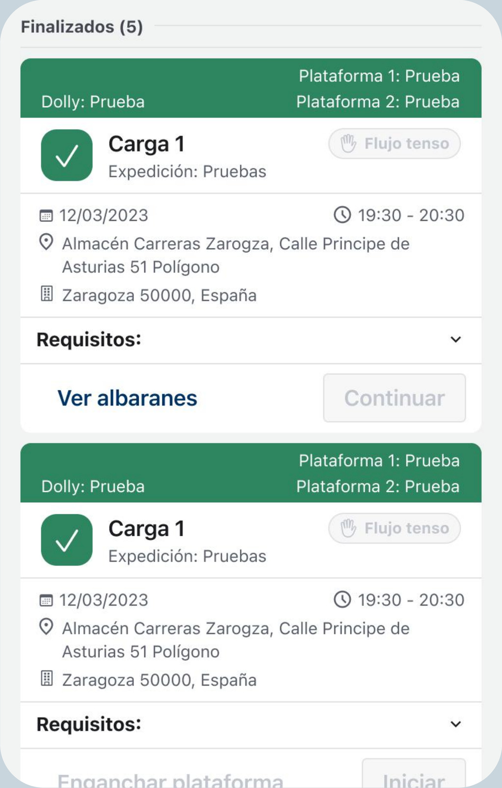
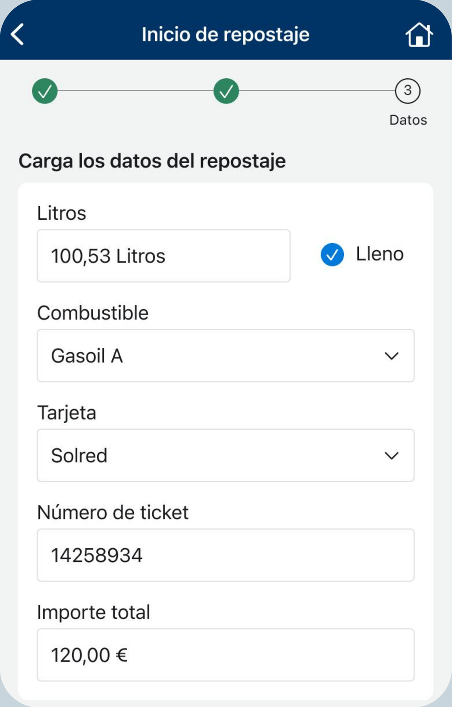
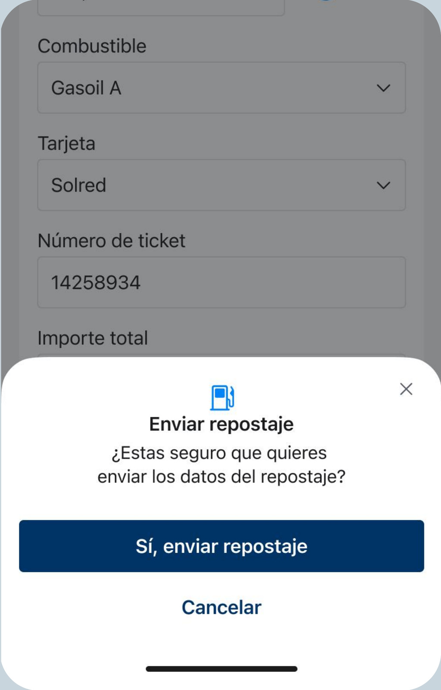
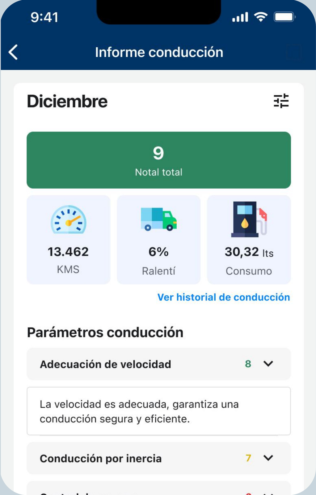
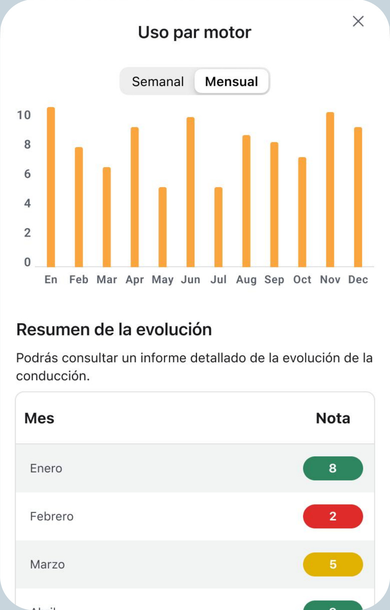

App IOS para conductores
App nativa para la logistica de mercancia en el norte de España: Zaragoza
NUEVA SOLUCIÓN
Proyecto: Qué resolvimos
Transformamos un proceso de trabajo manual, basado en documentación en papel, en una experiencia digital a través de una aplicación móvil nativa para conductores de transporte de mercancías.
La solución permitió digitalizar las tareas operativas que los choferes realizaban durante sus rutas desde Zaragoza hacia distintos destinos de España, centralizando la gestión en una única herramienta.
El desafío no era simplemente sustituir el papel por pantallas, sino simplificar los procesos y adaptar la experiencia digital a las necesidades reales de los conductores en su día a día.
Contexto: Porqué era necesario
La gestión del transporte de mercancías se realizaba mediante procesos manuales y documentación en papel, lo que dificultaba el acceso ágil a la información y el seguimiento de las operaciones.
Esta forma de trabajo limitaba la visibilidad de los equipos administrativos y de las distintas áreas involucradas, que necesitaban información actualizada para coordinar las operaciones, calcular los tiempos de transporte y estimar los gastos de combustible.
El desafío era conectar a los conductores con los equipos de gestión a través de una solución digital, que permitiera centralizar la información, optimizar la coordinación entre las áreas y facilitar el seguimiento de las mercancías en tiempo real.
Mi rol: Qué lideré
Participé en el diseño de una aplicación móvil nativa, partiendo de los requerimientos definidos para el MVP.
Mi trabajo abarcó tanto la definición de la experiencia de usuario como la construcción de una base de diseño escalable.
Colaboré en la definición de los flujos de usuario, buscando trasladar los procesos operativos manuales a una experiencia digital clara y eficiente para los conductores.
En paralelo, diseñé y estructuré un Design System, estableciendo componentes y patrones reutilizables para garantizar la consistencia de la interfaz y facilitar su evolución.
Además, desarrollé la documentación del sistema en Zeroheight, con el objetivo de alinear los criterios de diseño, facilitar la colaboración con los equipos de desarrollo y favorecer la escalabilidad del producto.
NUEVA PROPUESTA
Solución: Qué cambió
Del papel a una experiencia digital que conecta a conductores y equipos de gestión.


Un punto de acceso para toda la jornada
Diseñamos una pantalla de inicio que reúne las principales herramientas que el conductor necesita durante su jornada: planificación de viajes, gestión documental, registro de gastos y repostajes.
La organización de la información permite acceder directamente a las tareas más relevantes, reduciendo la necesidad de navegar entre diferentes secciones.


Gestión y seguimiento de viajes
Digitalizamos la consulta y gestión de los viajes, centralizando la información de las rutas, las cargas asignadas, los requisitos de transporte y los albaranes.
El conductor puede consultar el estado de cada carga y acceder a la documentación necesaria desde un mismo lugar, facilitando la coordinación y el seguimiento de las operaciones.


Registro digital de repostajes
Transformamos el registro manual de combustible en un flujo digital que permite introducir los litros repostados, el tipo de combustible, la tarjeta utilizada, el número de ticket y el importe.
Incorporamos una instancia de confirmación antes del envío para que el conductor pueda verificar la información registrada, facilitando su posterior gestión administrativa.


Visibilidad sobre el rendimiento de conducción
Incorporamos un espacio para consultar indicadores de conducción, como los kilómetros recorridos, el consumo de combustible y el tiempo en ralentí.
A través de resúmenes y gráficos de evolución, el conductor puede visualizar su desempeño y consultar información que antes resultaba más difícil de reunir y analizar.